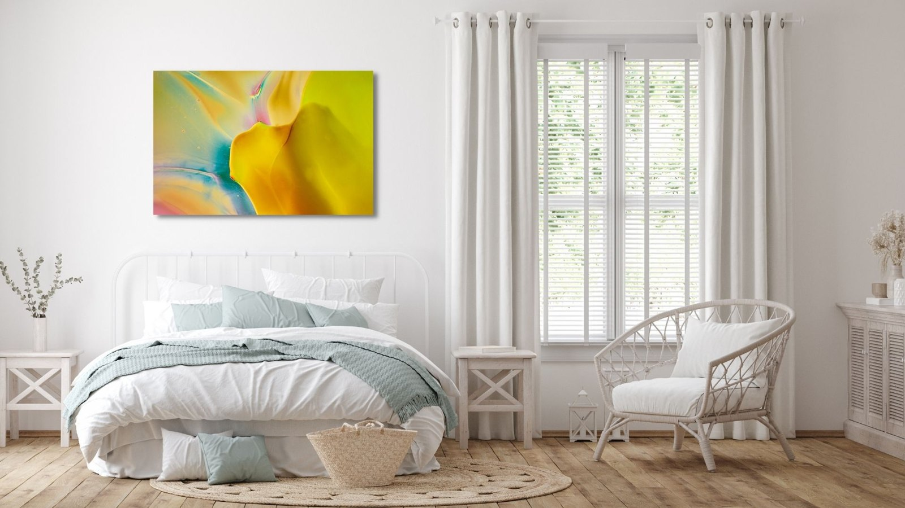
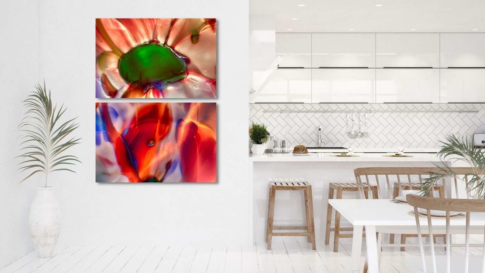

The Library · Omaste Witkowski
Why Art Is Good For Mental Health

Creating art is good for mental health at least partly because it takes your mind off your everyday life and provides a relaxing distraction. In fact, artistic activities such as sculpting, painting, or drawing are known to lower stress levels and promote mental calmness.
What many people don’t know is that viewing and engaging in the arts can also have a positive impact on mental health! When we enjoy art, we elevate our mood, we improve our ability to problem solve, and open our minds to new ideas.
Art can also raise serotonin levels. These benefits don’t just come from making art, they also occur by experiencing art. In fact, There is increasing evidence in rehabilitation medicine and the field of neuroscience that art enhances brain function by impacting brain wave patterns, emotions, and the nervous system.
Art For Interior Designs
When it comes to your interior spaces, it’a always a good idea to get as much natural light in as possible if you want to improve your mental health. Additionally, you are also going to want to have colors and artwork in this space that are uplifting in some way. When our eyes connect with a color, our brains release different chemicals that impact us physically and emotionally.
Happy colors are bright, warm colors like yellow, orange, pink and red. Pastel colors like peach, light pink or lilac can also have an uplifting effect on your mood. Being in a red room will increase our heart rate and stimulate chemicals associated with aggression and high energy, while the color yellow stimulates serotonin (the feel-good chemical) in our brains.
Uplifting Artwork for The Office
Artwork in your office, home office or workspace can provide an uplifting experience for most people. Studies have shown that artwork in work environments can not only lift the mood and improve wellbeing, it can also enhance creativity, promote social interaction, boost morale and productivity, inspire creative thinking, and elevate performance!

Uplifting Artwork for The Living Room
Have you ever thought about the emotional influence living room wall art has on you? Most people don’t realize it, but home wall decor can have a strong impact on your mood. When your wall art expresses beauty, life and positive energy, it makes you feel better. But if you have the wrong wall pictures for your living room, it can have a negative influence overall.
Uplifting Artwork for The Bedroom
The artwork we have in our bedrooms can help to lift us up in the morning and soothe us to sleep at night. It’s especially important to have artwork here that improves your mood in one way or another. Whether it’s photos of loved ones, restful nature scenes or soothing abstracts, you will want this art to make you smile.

Uplifting Artwork for The Kitchen and Dining Room
One of the easiest, quickest, and most affordable ways to lift the mood in your kitchen is artwork. There are infinite choices when it comes to style, era, color, and how to display it, meaning that artwork has the ability to make your kitchen boho-chic, country-classic, urban-modern, or anything in between!
Art is especially cool because kitchens are expensive to renovate, so renovating your kitchen to change up its look might not be a top priority for everyone. Paintings and photos can bring a lot of color and style without that big cost…
AND… When you think of how much time you spend in your kitchen or how often it ends up being the life of the party when you have guests, though, it’s clear that the kitchen is just as important when it comes to expressing yourself and your style at home.

Uplifting Artwork for The Bathroom
Many bathroom designs end up feeling a bit boring BECAUSE people are afraid to hang art in there… No More boring walls! Decorate your bathroom with the right wall art and turn a boring environment into a vibrant place…
Wall art is a great finishing element that can bring light and beauty into a bathroom space and bring all elements together and enhance a sense of perfection. With that simple touch, your bathroom can look beautiful, and not just functional!

Enjoying and appreciating art everyday can help us find meaning in life, understand our world and improve our mental health. This can be done in a variety of ways, including spending time in nature, the ultimate work of art!
Find your own piece with the art adventure · Ask the gallery what fits your wall